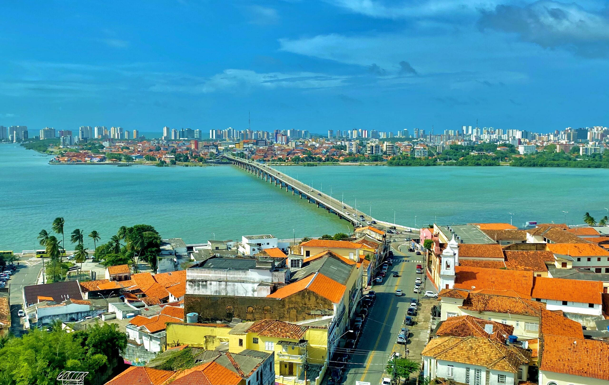

O Maranhão é um estado localizado na região Nordeste do Brasil, conhecido por sua rica cultura, com destaque para o samba, o bumba-meu-boi e suas belas paisagens, como os Lençóis Maranhenses, um dos principais destinos turísticos do país. A economia do Maranhão é baseada na agricultura, na indústria e no setor de petróleo e gás. Atualmente, o governador do Maranhão é Carlos Brandão, que trabalha para promover o desenvolvimento econômico, social e a melhoria da qualidade de vida dos maranhenses.
